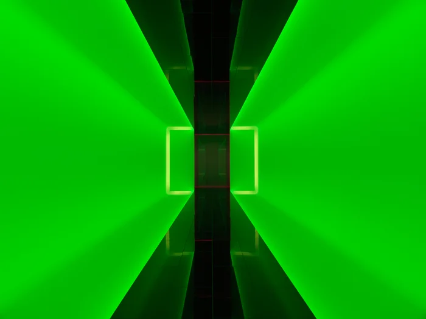
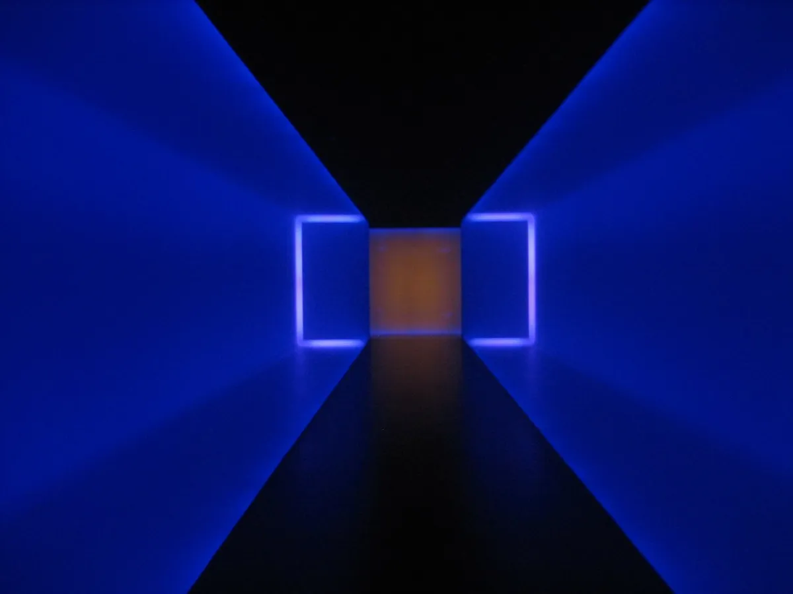
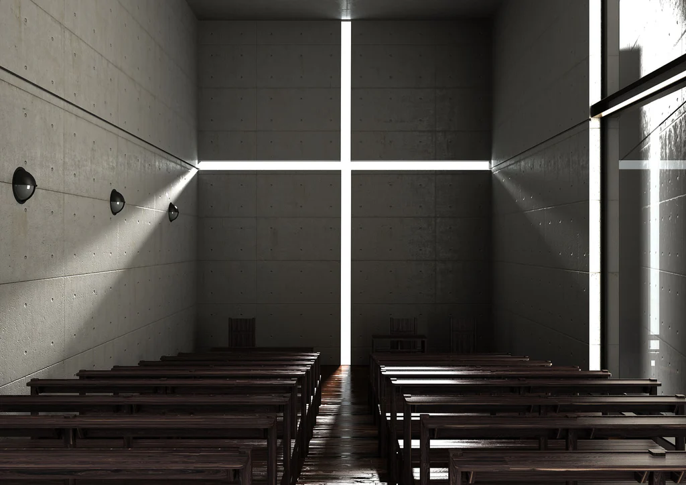
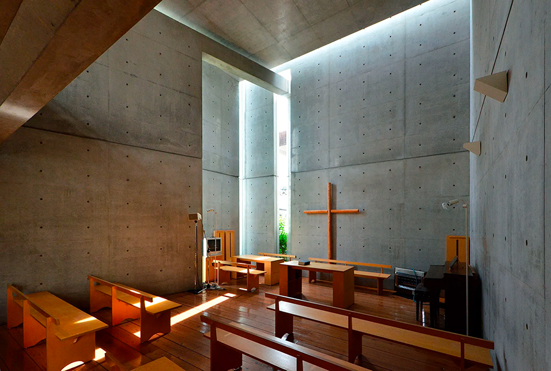
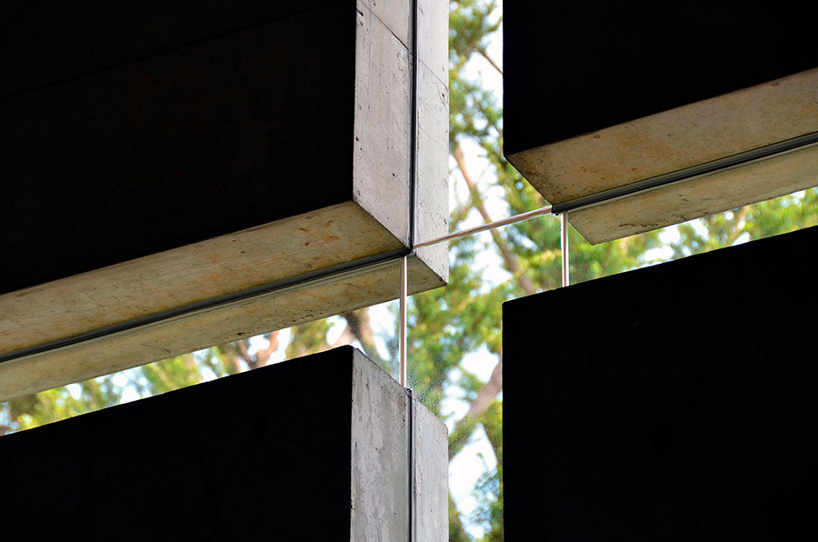
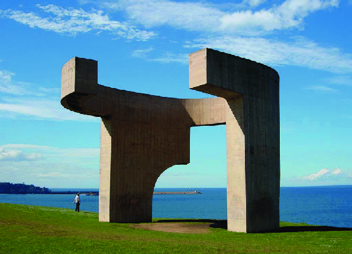
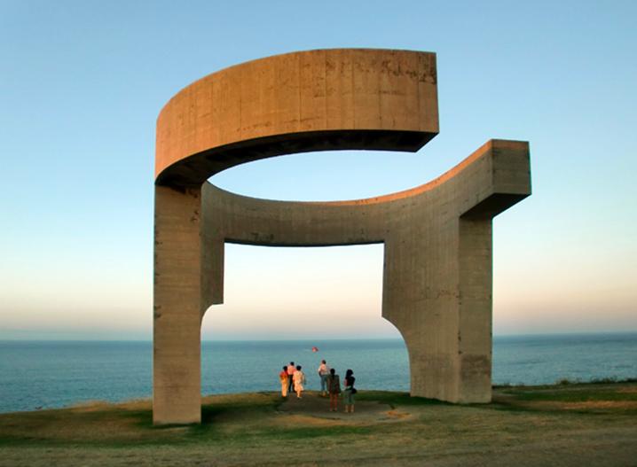
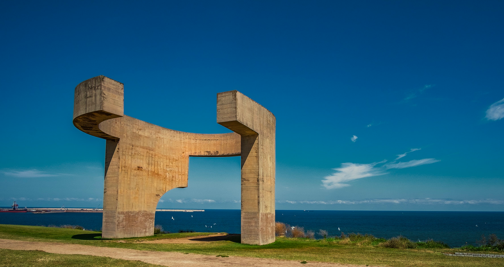

Lo spazio si configura attraverso relazioni percettive. Profondità, scansioni, pieni e vuoti, direzioni e intensità luminose compongono una struttura dinamica che la mente riconosce prima ancora che esista un progetto. L’immagine non rappresenta una forma, ma rivela una logica nascosta dello spazio che predispone l’atto compositivo.
A.


A Frontal Passage è un’installazione luminosa immersiva di James Turrell che utilizza luci fluorescenti per manipolare la percezione dello spazio, del colore e della profondità da parte dello spettatore. L’opera fa parte della serie Wedgeworks dell’artista ed è attualmente conservata nella collezione del Museum of Modern Art (MoMA) di New York.
Per sperimentare A Frontal Passage, il visitatore entra in una camera buia. All’interno, una “parete” radiosa ma nitidamente definita di luce rossa pura e saturata sembra dividere la stanza in diagonale. La luce sembra avere una densità fisica e una superficie piatta, come se fosse un oggetto solido o un rettangolo dipinto su una parete.
Gli elementi chiave dell’esperienza includono:
B.



L‘interno della Chiesa della Luce di Tadao Ando è uno spazio semplice e minimalista in cemento, caratterizzato da un uso sorprendente della luce naturale. La caratteristica più evidente è il taglio a forma di croce nella parete dietro l’altare, attraverso il quale la luce penetra nell’interno altrimenti buio, creando una croce luminosa che cambia con il passare delle ore del giorno.
Il design enfatizza la bellezza grezza dei materiali (cemento e luce) e crea un’atmosfera contemplativa e spirituale attraverso il forte contrasto tra luce e ombra. Il pavimento digrada verso l’altare, dirigendo l’attenzione verso la croce di luce. Lo spazio è un ottimo esempio dello stile caratteristico di Ando, che combina l’estetica giapponese con l’architettura minimalista e l’enfasi sul rapporto tra natura e architettura.
C.



L’opera di Eduardo Chillida, intitolata Elogio del Horizonte, è una scultura monumentale in cemento inaugurata nel 1990 a Gijón, in Spagna. L’opera, che si affaccia sull’Oceano Atlantico, è pensata per incorniciare l’orizzonte e amplificare il suono del mare attraverso le sue forme. Nonostante le sue dimensioni imponenti, l’intento dell’artista non era quello di dominare lo spazio, ma di interagire con esso.